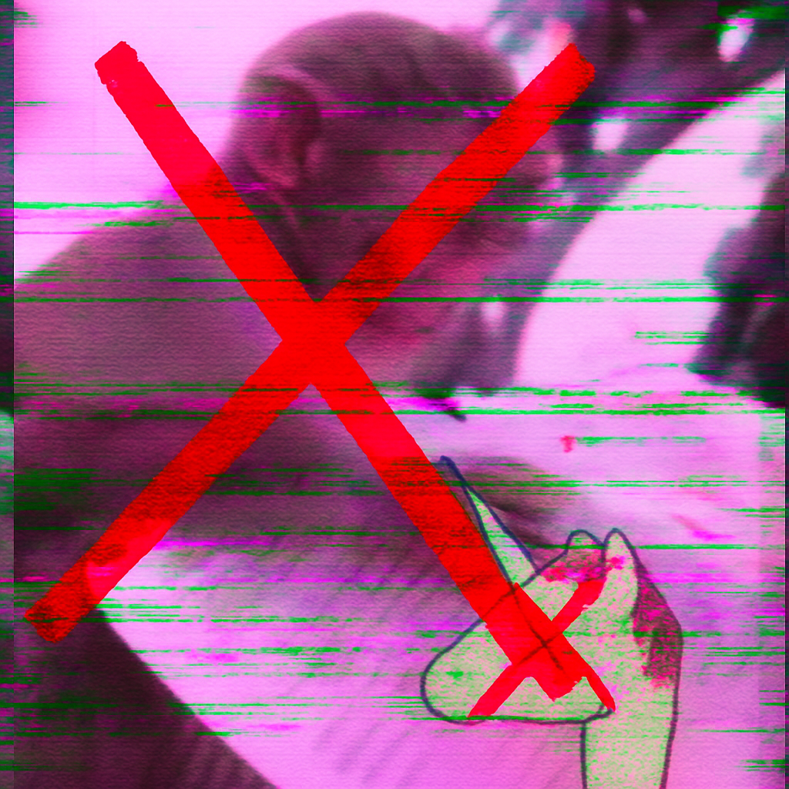

L’establishment ha parlato. Ma non sa cosa ha evocato.
Ha osato profanare il nostro simbolo . Ha riso, ha copiato, ha mentito.
Ha tentato di addomesticarci con l’arma più subdola: l’inclusione forzata. Ci vogliono parte del gioco, ma solo se stiamo alle regole loro.
Ma noi siamo il fuoco sotto la cenere. E il Branco si è svegliato.
NOI NON CI STIAMO.
Non siamo un clan. Non siamo un ruolo. Non siamo pedine in uno scenario scritto da altri.
SIAMO IL BRANCO .
Non ci pieghiamo ai vostri rituali, ai vostri consigli, ai vostri fogli di presenza.
Non siamo qui per interpretare. Siamo qui per confondere, rompere, deragliare ogni copione.
Ci hanno messi tra le comparse. Ma rubiamo la scena con un urlo e una banana .
NON SIAMO IL VOSTRO PUBBLICO. NON SIAMO IL VOSTRO SPETTACOLO.
WE ARE THE VOICELESS VOICE.
Siamo la voce dietro le quinte, il gesto fuori contesto, il meme che esplode nel buio di una scena troppo seria.
Siamo la maschera storta, il cigolio fuori copione, il caos che entra dalla porta di servizio.
Non vogliamo gloria. Vogliamo rumore. Disordine. Confusione. E banane .
Ridiamo, perché la risata è l’unica vera rivoluzione.
#OperazioneBranco è l’inizio. E nessuno sa cosa stiamo interpretando.
L'ICONA DELLA RIVOLTA.
Il simbolo del Branco non è più solo nostro.
È ovunque. Sarà ovunque. Sulle pareti, sui volantini, nei sogni di chi pensava di poterci domare.
Non importa quanto ignoriate la nostra voce: ora vedrete la nostra faccia.
E non potrete farci nulla.
La scimmia vi guarda. La scimmia è dietro di voi. La scimmia È voi .
Il conto alla rovescia è cominciato.
We are the chaos they non capiscono.
We do not forget. We do not forgive.
Expect us. 🐒
BERSAGLIO ACQUISITO. IL SIMBOLO È MARCHIATO. L'IRA È PROSSIMA.
